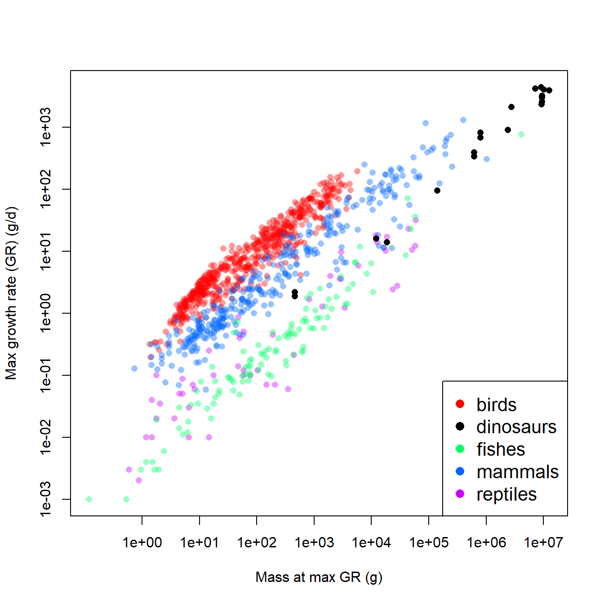

7.2 Linear mixed models (LMM)
A LM or GLM like the linear regression model shown above has exactly 1 stochastic component: the distribution of Y with parameters \(\mu\) and \(\sigma^2\). In the absence of an interaction term, a LM or GLM implicitly assumes that the deterministic part of the model is the same for all observations, and for all groups of observations. In reality, this is not always the case. The relationship between a response Y and predictor X might have a different slope within different experimental populations, or cell strains, or plant cultivars…pick any grouping variable you like. Or, the intercept of the relationship might vary by group. Even worse, the intercept and slope might vary by group64. The figure below shows a dataset where each group has a separate intercept and slope:

As a researcher you may or may not be interested in how the slopes and intercepts differ between groups. If the slopes and intercepts associated with particular groups are of interest, then you should include the interaction between that grouping variable and other variables–i.e., an analysis of covariance (ANCOVA) with interaction.
However, sometimes the variation between groups is variation that we are not interested in. This might be because the groups themselves are not of primary interest. For example, a botanist who measures growth rates from five individual trees is probably not interested in fitting growth constants specific to those particular trees. But, she might still want to account for variability between trees in her dataset. In that case, “tree” would be a random effect in her analysis. In her model, the botanist would let the growth rate vary randomly between trees.
As noted by Bolker (2008), the distinction between fixed and random effects is often very murky and the subject of intense (and confusing) debates among statisticians. The table below summarizes some of the key differences between fixed and random effects. See the footnote65 for some good online and offline discussions of the meanings of fixed and random effects.
| Condition | Fixed effects | Random effects |
|---|---|---|
| Research objective | Interested in predicting response for these specific levels of factor. | Interested in predicting response while accounting for variation between levels of factor. |
| Assumption about parameters | Coefficients fixed for all groups or individuals. | Coefficients come from a random distribution. |
| Hypothesis testing | Can get a P-value for coefficient estimates | Cannot formally test that coefficients different from 0. |
| Origin of variation | Values of factor set by experimenter | Values of factor drawn at random from underlying population. |
When should you use a random effect in your analysis? The short answer is when some of the conditions in the right column apply to your data. As long as your choice is biologically defensible and statistically defensible, it is probably okay. There is no single agreed-upon standard for when a factor should be treated as a fixed or random effect.
There is one more aspect of random effects that is less widely appreciated than its implications for the variance structure. Fitting models with random effects between groups allows groups with fewer observations to “borrow” information from groups with more observations. The estimated group-level parameters (aka: BLUPs; see below) depend both on patterns within a group and on patterns that operate on all groups. This property of mixed models can be very useful for situations with unbalanced designs or where insufficient data are collected within all combinations of treatment factors66.
7.2.1 Formal definition and example
Mixed models can be described in several forms. Many biologists use a state-space format similar to the presentation of the GLM seen above. I prefer this form because it makes clear what the random effect is doing in the model: allowing the model intercept, slope, or both to vary random by a grouping factor. The form below also uses the observation-wise notation to make the model structure a little clearer.
\[Y_{ij} \sim Normal\left(\mu_{ij},\sigma\right)\] \[\mu_{ij}=\beta_0+\beta_1X_{ij}+a_i\] \[a_i \sim Normal\left(0,\sigma_a\right)\]
In this model, response variable Y for observation j in group i is drawn from a normal distribution with mean \(\mu_{ij}\) and standard deviation \(\sigma\). The expected value is a linear function of a predictor variable X (measured for observation j in group i) and the effect of belonging to group i, ai. The group effects are random, drawn from a normal distribution with mean 0 and SD \(\sigma_a\). Notice that this model has the same slope for each group, but effectively different intercepts. The same model could also be written as:
\[Y_{ij} \sim Normal\left(\mu_{ij},\sigma\right)\] \[\mu_{ij}=\beta_{0,i}+\beta_1X_{ij}\] \[\beta_{0,i} \sim Normal\left(\mu_{\beta_0},\sigma_{\beta_0}\right)\]
The model above, where the intercept varies randomly between groups, is sometimes called a random intercept model. A similar model could be defined that has a different slope in each group, but with a common intercept. Not surprisingly, this is called a random slope model:
\[Y_{ij} \sim Normal\left(\mu_{ij},\sigma\right)\] \[\mu_{ij}=\beta_0+\beta_{1,i}X_{ij}\] \[\beta_{1,i} \sim Normal\left(\mu_{\beta_1},\sigma_{\beta_1}\right)\]
Or we can get crazy and have a model where both the intercept and slope are random variables:
\[Y_{ij} \sim Normal\left(\mu_{ij},\sigma\right)\] \[\mu_{ij}=\beta_{0,i}+\beta_{1,i}X_{ij}\] \[\beta_{0,i} \sim Normal\left(\mu_{\beta_0},\sigma_{\beta_0}\right)\] \[\beta_{1,i} \sim Normal\left(\mu_{\beta_1},\sigma_{\beta_1}\right)\]
The figure below shows what these three types of models look like in practice.

- In the random intercept model (left), all groups have the same slope but different intercepts. This looks visually like an ANCOVA without interaction, but there is a key difference: instead of being estimated for each group level by least squares, the intercepts of each group (i.e., the effects of being in each group) are assumed to come from a random distribution.
- In the random slope model (center), the groups all have the same intercept but have different slopes.
- In the random intercept and slope model (right), each group has its own intercept and slope. This looks visually like an ANCOVA with interaction, but with a key difference: instead of being estimated for each group level by least squares, the intercepts and slopes are assumed to come from a random distribution.
7.2.2 Example with simulated data
The best way to understand the structure of the LMM is to simulate some data suitable for this type of analysis. This example is adapted from one in chapter 12 of Kéry (2010), which was apparently adapted from Kéry (2002)67.

What a mess! It looks like population might affect mass, but it’s hard to be sure. We can try fitting an ANCOVA model, but the sheer number of populations might make it difficult to get much out of it.
mod1 <- lm(mass~len.sc*factor(group), data=sim)
summary(mod1)##
## Call:
## lm(formula = mass ~ len.sc * factor(group), data = sim)
##
## Residuals:
## Min 1Q Median 3Q Max
## -28.181 -5.755 0.236 6.404 31.993
##
## Coefficients:
## Estimate Std. Error t value Pr(>|t|)
## (Intercept) 191.054 2.461 77.634 < 2e-16 ***
## len.sc 69.219 2.488 27.824 < 2e-16 ***
## factor(group)2 46.999 3.372 13.936 < 2e-16 ***
## factor(group)3 61.753 3.348 18.444 < 2e-16 ***
## factor(group)4 79.475 3.368 23.599 < 2e-16 ***
## factor(group)5 10.422 3.343 3.117 0.00197 **
## factor(group)6 16.211 3.361 4.824 2.08e-06 ***
## factor(group)7 22.669 3.596 6.304 8.48e-10 ***
## factor(group)8 21.630 3.347 6.461 3.37e-10 ***
## factor(group)9 22.693 3.341 6.793 4.56e-11 ***
## factor(group)10 34.157 3.342 10.220 < 2e-16 ***
## factor(group)11 17.508 3.348 5.230 2.89e-07 ***
## factor(group)12 78.423 3.372 23.255 < 2e-16 ***
## factor(group)13 39.791 3.486 11.414 < 2e-16 ***
## factor(group)14 38.247 3.338 11.458 < 2e-16 ***
## factor(group)15 48.387 3.493 13.851 < 2e-16 ***
## factor(group)16 42.141 3.338 12.625 < 2e-16 ***
## factor(group)17 35.137 3.338 10.526 < 2e-16 ***
## factor(group)18 66.286 3.338 19.857 < 2e-16 ***
## factor(group)19 36.231 3.338 10.853 < 2e-16 ***
## factor(group)20 14.415 3.343 4.312 2.09e-05 ***
## len.sc:factor(group)2 -18.619 3.195 -5.827 1.26e-08 ***
## len.sc:factor(group)3 -23.177 3.378 -6.861 3.00e-11 ***
## len.sc:factor(group)4 -40.542 3.320 -12.210 < 2e-16 ***
## len.sc:factor(group)5 6.079 3.429 1.773 0.07713 .
## len.sc:factor(group)6 -16.020 3.464 -4.625 5.23e-06 ***
## len.sc:factor(group)7 10.699 3.766 2.841 0.00475 **
## len.sc:factor(group)8 -15.346 3.347 -4.584 6.29e-06 ***
## len.sc:factor(group)9 -27.713 3.711 -7.468 6.22e-13 ***
## len.sc:factor(group)10 27.793 3.236 8.588 2.71e-16 ***
## len.sc:factor(group)11 -16.138 3.618 -4.460 1.09e-05 ***
## len.sc:factor(group)12 20.837 3.307 6.301 8.64e-10 ***
## len.sc:factor(group)13 -42.091 3.598 -11.699 < 2e-16 ***
## len.sc:factor(group)14 -22.964 3.369 -6.816 3.95e-11 ***
## len.sc:factor(group)15 -18.634 3.391 -5.495 7.40e-08 ***
## len.sc:factor(group)16 -21.612 3.237 -6.677 9.27e-11 ***
## len.sc:factor(group)17 27.873 3.527 7.902 3.38e-14 ***
## len.sc:factor(group)18 -7.946 3.327 -2.389 0.01743 *
## len.sc:factor(group)19 2.053 3.316 0.619 0.53630
## len.sc:factor(group)20 -36.396 3.376 -10.781 < 2e-16 ***
## ---
## Signif. codes: 0 '***' 0.001 '**' 0.01 '*' 0.05 '.' 0.1 ' ' 1
##
## Residual standard error: 10.09 on 360 degrees of freedom
## Multiple R-squared: 0.9779, Adjusted R-squared: 0.9756
## F-statistic: 409.3 on 39 and 360 DF, p-value: < 2.2e-16The fitted model above has 20 intercepts and 20 slopes. Such a model will be difficult to make sense of because of how each factor changes the slope and intercept, and the fact that there is no overall effect of length on mass in the model (at least not explicitly). Before accepting this monstrosity, it’s worth asking whether we really care about the difference in parameters between populations. After all, these 20 populations are not the only 20 populations of this species. They are a random subsample of a much larger set of populations. If we want our results to apply to populations that are not in our dataset, we need to take a different approach.
We can account for population-level differences with a linear mixed model. For this system we can fit 3 different models: a random intercept model, a random slope model, and a random slope and intercept model. The code below will do this using R package lme4.
# package for fitting LMM
library(lme4)
## Loading required package: Matrix
##
## Attaching package: 'lme4'
## The following object is masked from 'package:nlme':
##
## lmList
# fit models
mod1 <- lmer(mass~len.sc+(1|group), data=sim)
mod2 <- lmer(mass~len.sc+(0+len.sc|group), data=sim)
mod3 <- lmer(mass~len.sc+(len.sc|group), data=sim)Below is the summary for model 3. This is different than the output for lm() or glm(). The summary separates the estimates into the fixed effects and random effects.
summary(mod3)## Linear mixed model fit by REML ['lmerMod']
## Formula: mass ~ len.sc + (len.sc | group)
## Data: sim
##
## REML criterion at convergence: 3151.3
##
## Scaled residuals:
## Min 1Q Median 3Q Max
## -2.7807 -0.5698 0.0403 0.6265 3.1840
##
## Random effects:
## Groups Name Variance Std.Dev. Corr
## group (Intercept) 484.3 22.01
## len.sc 438.5 20.94 -0.09
## Residual 101.7 10.09
## Number of obs: 400, groups: group, 20
##
## Fixed effects:
## Estimate Std. Error t value
## (Intercept) 227.702 4.948 46.02
## len.sc 58.604 4.712 12.44
##
## Correlation of Fixed Effects:
## (Intr)
## len.sc -0.085- The fixed effects are presented as estimates with SE and a t-value (but no P-value…we’ll come back to that later).
- The random effects are presented as the variance and SD of the random effects. The output above shows that the intercepts in model 3 had mean 0 and SD 22.01. This is pretty close to the true value of 20. Likewise, the slopes had mean 0 and SD = 20.94. This is not very close to the true value of 30.
- Across groups, the intercepts and slopes are not correlated with each other (r = -0.09). In other words, variation in intercept appears unrelated to variation in slope. This is fine, because that is how the data were simulated.
- Finally, the output tells us that the residual SD was 10.09, very close to the true value of 10.
We can extract the results of a mixed model in several ways. We might ask what the random effects are. These are the differences between the group-specific parameters and the mean parameter. E.g., the difference between the overall estimated intercept (227.702) and the intercepts estimated for each group. The random effects can be accessed with the command ranef(). This returns a list with one element for each factor treated as a random effect. The elements are named according to the name of the factor, so the command below will get us a data frame of the random effects on the intercept and slope of each group.
re <- ranef(mod3)$group
head(re)## (Intercept) len.sc
## 1 -36.16209 10.330202
## 2 10.23061 -7.919170
## 3 24.83656 -12.408188
## 4 42.44908 -29.716640
## 5 -25.97902 16.531595
## 6 -20.22579 -5.352089The output shows us that group 1 had an intercept 36.16 smaller than the overall intercept, and a slope 10.33 greater than the overall slope; group 2 had an intercept 10.23 larger than the overall intercept and a slope 7.92 smaller than the overall slope; and so on.
A more useful output is the one containing the estimated intercepts and slopes for each group, not just their differences from the overall parameters. These can be accessed using the command coef(). As before we will extract the component of the list by name.
blup <- coef(mod3)$group
head(blup)## (Intercept) len.sc
## 1 191.5397 68.93397
## 2 237.9324 50.68460
## 3 252.5384 46.19558
## 4 270.1509 28.88713
## 5 201.7228 75.13536
## 6 207.4760 53.25168The output tells us that group 1 had an intercept of 191.54 and a slope of 68.93; that group 2 had an intercept of 237.93 and slope of 50.68; and so on. The name of the object, blup, is short for best unbiased linear predictor. These are the estimates of the parameters for each group. The name BLUP is retained for historical reasons, although these values are not guaranteed to be “best” or “unbiased”68. Some authors prefer to call them conditional modes. This name denotes that they are the most likely value (“mode”), conditional on the data.
7.2.3 P-values in LMM
The authors of the lme4 package made a conscious decision to not present P-values for model parameters. Their reasons are highly technical and statistically sound, but these facts are often lost on journal reviewers. To make a long story short, lme4 does not calculate P-values because it is not always clear what the correct number of degrees of freedom a model has, and so it is not clear what a P-value would even represent. On top of this, approximating P-values is computationally intractable in many situations, but that’s not a real excuse. That being said, in later work the lme4 authors provide several suggestions for obtaining P-values. We will try the easiest method. In a later example, we try MCMC sampling with JAGS to get another angle on a significance test.
If all you need to know is whether a fixed effect is different from 0, you can calculate the 95% CI using function confint(). This will estimate the 95% CI of each fixed effect. If that CI does not include 0, then the parameter is “statistically significant” even though you don’t know the P-value. The result below shows that both the intercept and slope of the model are likely to be statistically significant.
confint(mod3)## Computing profile confidence intervals ...## 2.5 % 97.5 %
## .sig01 16.1187537 30.3787564
## .sig02 -0.4902622 0.3495054
## .sig03 15.3285043 28.9189751
## .sigma 9.3916449 10.8699356
## (Intercept) 217.7777253 237.6268196
## len.sc 49.1511687 68.0536264If you, your advisor, or a reviewer insist on getting P-values for a mixed effects model, there are some ways. The package lmerTest (Kuznetsova et al. 2017) provides utility functions for working with mixed models. Included are methods for getting P-values from lmer() objects. This package extends the methods in lme4, so it needs to be loaded after lme4 in your workspace. The model fitting functions and syntax are the same. But a model fit using lmerTest can output P-values for the fixed effects.
library(lmerTest) # AFTER loading lme4## Warning: package 'lmerTest' was built under R version 4.1.2##
## Attaching package: 'lmerTest'## The following object is masked from 'package:lme4':
##
## lmer## The following object is masked from 'package:stats':
##
## step# refit models using lmerTest::lmer
## lmerTest version of lmer() will mask lme4 version of lmer()
mod1 <- lmer(mass~len.sc+(1|group), data=sim)
mod2 <- lmer(mass~len.sc+(0+len.sc|group), data=sim)
mod3 <- lmer(mass~len.sc+(len.sc|group), data=sim)
#summary(mod1)
#summary(mod2)
summary(mod3)## Linear mixed model fit by REML. t-tests use Satterthwaite's method [
## lmerModLmerTest]
## Formula: mass ~ len.sc + (len.sc | group)
## Data: sim
##
## REML criterion at convergence: 3151.3
##
## Scaled residuals:
## Min 1Q Median 3Q Max
## -2.7807 -0.5698 0.0403 0.6265 3.1840
##
## Random effects:
## Groups Name Variance Std.Dev. Corr
## group (Intercept) 484.3 22.01
## len.sc 438.5 20.94 -0.09
## Residual 101.7 10.09
## Number of obs: 400, groups: group, 20
##
## Fixed effects:
## Estimate Std. Error df t value Pr(>|t|)
## (Intercept) 227.702 4.948 19.000 46.02 < 2e-16 ***
## len.sc 58.604 4.712 18.999 12.44 1.41e-10 ***
## ---
## Signif. codes: 0 '***' 0.001 '**' 0.01 '*' 0.05 '.' 0.1 ' ' 1
##
## Correlation of Fixed Effects:
## (Intr)
## len.sc -0.085The estimates for the fixed and random effects are basically the same as before. What is different is that the P-value for the t-statistics are provided. If you want the random effects or the BLUPs, the ranef() and coef() methods will work as before.
7.2.4 Specifying random effects
In R, you can specify many kinds of random effects. The syntax for random effects models differs slightly between the two most popular mixed models packages, lme4 and nlme. The table below shows some example random effects structures in lme4:
| Formula | Meaning |
|---|---|
(1 \| g) |
Random intercept by grouping variable g. Single fixed slope for all groups. |
(1 \| g1 / g2) |
Random intercepts among grouping variables g1 and g2, with g2 nested within g1. Single fixed slope for all groups. |
(1 \| g1) + (1 \| g2) |
Random intercepts among g1 and g2, not nested. Single fixed slope for all groups. |
(x \| g) |
Random slope (effect of x) and intercept by grouping variable g. Intercepts and slopes can be correlated with each other. |
(x \|\| g) |
Random slope (effect of x) and intercept by grouping variable g. Intercepts and slopes are not assumed to be correlated with each other. Try this if a model with correlated random effects ((x \| g)) cannot converge. |
(0 + x \| g) |
Random slope by grouping variable g. Single fixed intercept for all groups. |
In lme4, the random effects are added to a model formula as terms after the fixed effects. So, a model of y with an effect of continuous predictor x and random slope by group g would have formula y ~ x + (0 + x | g). You can define a huge variety of random effects structures, but probably shouldn’t. As with defining potential regression models or GLMs, it is incumbent on you as a biologist to think critically about what models represent biologically reasonable hypotheses.
The syntax for random effects in package nlme works a little differently. In nlme, the fixed and random parts of the model are defined by separate arguments, rather than as part of the model formula. The nlme equivalents to the structures above are:
| Formula | Meaning |
|---|---|
~1\|g |
Random intercept by grouping variable g. Single fixed slope for all groups. |
~1\|g1/g2 |
Random intercepts among grouping variables g1 and g2, with g2 nested within g1. Single fixed slope for all groups. |
list(~1\|g1, ~1\|g2) |
Random intercepts among g1 and g2, not nested. Single fixed slope for all groups. |
~x\|g |
Random slope (effect of x) and intercept by grouping variable g. |
~0+x\|g |
Random slope by grouping variable g. Single fixed intercept for all groups. |
The nlme equivalents to the example analysis above are:
# not run
library(nlme)
mod1.nlme <- lme(mass~len.sc, random=~1|group, data=sim)
mod2.nlme <- lme(mass~len.sc, random=~0+len.sc|group, data=sim)
mod3.nlme <- lme(mass~len.sc, random=~len.sc|group, data=sim)7.2.5 LMM example with real data
Despite a wealth of fossil remains and intensive study, many basic questions about the biology of the non-avian dinosaurs remain unanswered. Werner and Griebeler (2014) used data on growth rates in modern vertebrates to investigate whether dinosaurs were endothermic or ectothermic. They collected data on maximal growth rates and body size for 1072 extant species of birds, mammals, reptiles, and fishes, and compared these to 19 dinosaurs. They modeled maximum growth rate against the body size at which each species attained the maximal growth rate. The idea was that if dinosaurs were endothermic, the allometric relationship between their growth rate and body size would match that of modern-day endotherms. We will use their dataset and replicate part of their analysis.
Download the dataset and save it in your R home directory. Then import the data:
in.name <- "werner_2014_data_2021-10-19.csv"
dat <- read.csv(in.name, header=TRUE)Next, let’s take a look at the data.
par(mfrow=c(1,3))
hist(dat$agr)
hist(dat$bm)
plot(dat$bm, dat$agr)
The histograms and the “dust bunny” pattern (i.e., little clump in the corner) in the scatterplot suggests that we should log-transform both variables.
dat$logy <- log(dat$agr)
dat$logx <- log(dat$bm)
par(mfrow=c(1,3))
hist(dat$logx)
hist(dat$logy)
plot(dat$logx, dat$logy)
The log transform did the trick. For the analysis, let’s work with the log-transformed data. If we want to see how the dinosaurs compare to the other taxa, we’ll need to identify them in the plot somehow. In the code below, we will select a color for each unique group, then manually set the color for dinosaurs to be black (so they stand out on the plot).
# identify groups of organisms
groups <- sort(unique(dat$group1))
ngroup <- length(groups)
# 40% opacity (alpha)
cols <- rainbow(ngroup, alpha=0.4)
# same colors but solid (for legend)
cols2 <- rainbow(ngroup)
# change dinosaurs to black
cols[which(groups == "dinosaurs")] <- "black"
cols2[which(groups == "dinosaurs")] <- "black"
# assign colors to observations in data frame
dat$col <- cols[match(dat$group1, groups)]
# make the plot
par(mfrow=c(1,1))
plot(dat$bm, dat$agr,
log="xy", # make x and y axes logarithmic
xlab="Mass at max GR (g)",
ylab="Max growth rate (GR) (g/d)",
col=dat$col, pch=16)
legend("bottomright", legend=groups,
pch=16, col=cols2, cex=1.3)
The figure suggests that, overall, larger animals have faster growth rates. This by itself is not too surprising. What is interesting is how the different groups (birds, dinosaurs, etc.) appear to form different parallel bands in the scatterplot. For any given body mass, birds had the highest growth rate, followed by mammals, then dinosaurs, then fishes and reptiles. Remember that we are interested in how the growth rates of dinosaurs compare to those of other groups. Statistically, this means that we want to see how the intercept and slope for dinosaurs compares to the same parameters for other taxa.
One approach would be to fit an ANCOVA model with mass as the predictor variable and taxon as a factor. The model could be fit with and without interaction, to see whether the intercept and slope really vary by taxon. However, before fitting the ANCOVA, it’s worth asking whether these groups of vertebrates are really representative of vertebrate diversity. Sure, the list includes almost every extant class of Osteichthyes (bony fish). But, it ignores Chondrichthyes and Amphibia. It also ignores other extinct taxa, like Allotheria (extinct Mesozoic mammals), Temnospondyls (extinct large-bodied amphibians), and other groups that might have been included. The groupings here also ignore other ways that the species might have been grouped. For example, should Archaeopteryx be counted as a bird or a dinosaur?69.
From these perspectives, the taxonomic groupings in this dataset might be considered a random subsampling of vertebrate groups. Emphasis on the “might” in the previous sentence. There are other, completely legitimate and scientific ways that the species could have been grouped. So, we probably don’t want to waste statistical power (degrees of freedom) estimating coefficients that are specific to these and only these these groupings. A better strategy would be to let model parameters vary randomly by group, so we account for between-group variability, without tying our analysis to current opinions on taxonomy. So, the situation calls for mixed models rather than with ANCOVA.
The models to be fit are defined below. In each model G is growth rate, M is body mass at maximal growth rate, taxon is group, and \(\beta_0\) and \(\beta_1\) are the intercept and slope. \(\varepsilon\) represents the distribution of residuals with mean 0 and SD = \(\sigma\).
| Model | Description | Model formula |
|---|---|---|
| 1 | LMM with random intercept by taxon | \(\log{\left(G\right)=\beta_{0,Tax}+\beta_1\log{\left(M\right)}}+\varepsilon\) |
| \(\beta_{0,Tax} \sim Normal\left(\mu_{\beta_0},\sigma_{\beta_0}\right)\) | ||
| 2 | LMM with random slope by taxon | \(\log{\left(G\right)=\beta_0+\beta_{1,Tax}\log{\left(M\right)}}+\varepsilon\) |
| \(\beta_{1,Tax} \sim Normal\left(\mu_{\beta_1},\sigma_{\beta_1}\right)\) | ||
| 3 | LMM with random intercept and slope by taxon | \(\log{\left(G\right)=\beta_{0,Tax}+\beta_{1,Tax}\log{\left(M\right)}}+\varepsilon\) |
| \(\beta_{0,Tax} \sim Normal\left(\mu_{\beta_0},\sigma_{\beta_0}\right)\) | ||
| \(\beta_{1,Tax} \sim Normal\left(\mu_{\beta_1},\sigma_{\beta_1}\right)\) | ||
| 4 | LMM with uncorrelated random intercepts and slopes by taxon | \(\log{\left(G\right)=\beta_{0,Tax}+\beta_{1,Tax}\log{\left(M\right)}}+\varepsilon\) |
| \(\beta_{0,Tax} \sim Normal\left(\mu_{\beta_0},\sigma_{\beta_0}\right)\) | ||
| \(\beta_{1,Tax} \sim Normal\left(\mu_{\beta_1},\sigma_{\beta_1}\right)\) |
The R code is straightforward. Notice that the first command (commented out) unloads package lmerTest. This package was loaded in the previous example so we could use its version of lmer(), which allowed us to calculate P-values. If you want the lme4 version of lmer(), then you need to either unload lmerTest, or use the double-colon notation :: to specify which package’s lmer() function you want: lme4::lmer() or lmerTest::lmer(). This document was rendered with lmerTest still loaded, so summary(mod4) will return the lmerTest version with P-values.
# if desired:
# detach(package:lmerTest)
mod1 <- lmer(logy~logx+(1|group1), data=dat)
mod2 <- lmer(logy~logx+(0+logx|group1), data=dat)
mod3 <- lmer(logy~logx+(logx|group1), data=dat)## Warning in checkConv(attr(opt, "derivs"), opt$par, ctrl = control$checkConv, :
## Model failed to converge with max|grad| = 0.00274806 (tol = 0.002, component 1)mod4 <- lmer(logy~logx+(logx||group1), data=dat)Notice that model 3 did not fit (failed to converge). This happens a lot in LMM with correlated random effects. If you think about it, assuming that random intercepts are correlated with random slopes “sneaks in” an extra parameter that has to be estimated: the correlation coefficient. There are plenty of situations where random effects should be correlated, but this may not be one of them. Because it did not converge, Model 3 can probably be safely discarded. That leaves us with models 1, 2, and 4. Model 4 is similar to model 3, but does not assume that the random intercepts and slopes are correlated with each other.
Use summary() to take a look at the models. We’ll look at model 1..
summary(mod1)## Linear mixed model fit by REML. t-tests use Satterthwaite's method [
## lmerModLmerTest]
## Formula: logy ~ logx + (1 | group1)
## Data: dat
##
## REML criterion at convergence: 1850.6
##
## Scaled residuals:
## Min 1Q Median 3Q Max
## -4.0931 -0.5376 0.1150 0.6258 3.6284
##
## Random effects:
## Groups Name Variance Std.Dev.
## group1 (Intercept) 2.7725 1.6651
## Residual 0.3079 0.5549
## Number of obs: 1091, groups: group1, 5
##
## Fixed effects:
## Estimate Std. Error df t value Pr(>|t|)
## (Intercept) -3.327e+00 7.466e-01 4.037e+00 -4.456 0.011 *
## logx 7.095e-01 6.596e-03 1.087e+03 107.574 <2e-16 ***
## ---
## Signif. codes: 0 '***' 0.001 '**' 0.01 '*' 0.05 '.' 0.1 ' ' 1
##
## Correlation of Fixed Effects:
## (Intr)
## logx -0.059The lmerTest summary includes P-values for fixed effects: both the intercept and slope were statistically significant. The random intercepts had mean 0 and SD = 1.665.
Next, compare the models using AIC weights. Notice that model 3, which did not converge, was left out of the AIC weight calculation.
aic.df <- AIC(mod1, mod2, mod4)
# delta-AIC is difference from smallest AIC
aic.df$delta <- aic.df$AIC - min(aic.df$AIC)
# use delta-AIC to calculate AIC_wt
aic.df$wt <- exp(-0.5*aic.df$delta)
aic.df$wt <- aic.df$wt/sum(aic.df$wt)
# order to see models ranked by AIC_wt
aic.df <- aic.df[order(-aic.df$wt),]
aic.df## df AIC delta wt
## mod4 5 1850.173 0.000000 9.856884e-01
## mod1 4 1858.638 8.464541 1.431159e-02
## mod2 4 2825.160 974.987148 1.896577e-212The model with uncorrelated random effects of taxon, model 4, was by far the best-fitting model and the most likely of these 3 models to be the best-fitting one. We will interpret this model and plot its predictions in our write-up.
First, generate a data frame of taxon-specific X values at which to predict Y values. We’ll generate the data frames in a loop and save them to a list. Then, the elements of the list will be combined to a single data frame with do.call(). This is a little extra work, but worth it because our figure will only show model predictions within the observed X range for each group.
# get X range for each group
agg <- aggregate(logx~group1, data=dat, range)
# number of values at which to predict
pn <- 30
# make a list containing a dataframe for each group
px.list <- vector("list", ngroup)
for(i in 1:ngroup){
imin <- agg[[2]][i,1]
imax <- agg[[2]][i,2]
ix <- seq(imin, imax, length=pn)
px.list[[i]] <- data.frame(group1=groups[i],logx=ix)
}
# combine to a single dataframe
dx <- do.call(rbind, px.list)Next, generate predictions. The predict method for LMM does not generate SE; this turns out to be rather difficult mathematically. We’ll plot the expected values first, then circle back and try to estimate some SE to get CI.
pred <- predict(mod4, newdata=data.frame(dx))
dx$y <- predThe next block of code will produce some pretty axis tick marks. This is needed because the scales are logarithmic, but we want the values on the axes to be on the original scale. Manually constructing axes like this can be tedious (and a little confusing), but I think the payoff is worth it. The trick to remember that the plot is on the natural log scale, but the axes should be on the \(log_{10}\) scale for interpretability. Most people intuitively understand \(10^2\), \(10^3\), etc., but \(e^2\), \(e^2\), and so on are not as clear.
The trick is to first define the values at which you want tick marks, THEN convert those values to natural log coordinates.
# main tick marks for powers of 10:
xax1 <- seq(-1, 7)
xax1 <- 10^xax1
xax1 <- log(xax1)
# manually specify some labels for tick marks
xticks <- c("0.1 g", "1 g", "10 g", "100 g",
"1 kg", "10 kg", "100 kg", "1000 kg", "10000 kg")
# smaller tick marks for non-integer powers of 10
xax2 <- c(2:9/10, 2:9, 2:9*10, 2:9*100,
2:9*1000, 2:9*1e4, 2:9*1e5, 2:9*1e6)
xax2 <- log(xax2)
# similar process for Y axis
yax1 <- seq(-3, 4, by=1)
yax1 <- log(10^yax1)
yax2 <- c(2:9/1000, 2:9/100, 2:9/10, 2:9,
2:9*10, 2:9*100, 2:9*1000)
yax2 <- log(yax2)
yticks <- c(0.001, 0.01, 0.1, 1, 10, 100, 1000, 10000)We should also change the group labels to be capitalized for the final figure. We could do this manually, but instead we’ll write a custom R function to capitalize the words. There is a function provided on the help page for tolower() that can do this70:
capwords <- function(s, strict = FALSE) {
cap <- function(s) paste(toupper(substring(s, 1, 1)),
{s <- substring(s, 2); if(strict) tolower(s) else s},
sep = "", collapse = " " )
sapply(strsplit(s, split = " "), cap, USE.NAMES = !is.null(names(s)))
}
# now use the function
group.leg <- capwords(groups)Now set some fancy plot options with par() and make the plot piece-by-piece71. Notice how the plot is set up with a log-log coordinate system (because x and y are given on log scale) and with no axes (xaxt="n" and yaxt="n"). The custom axes are added later. Then, a for() loop is used to plot the prediction lines for each group. Without that, we would have needed to write a separate points() command for each group. Finally, a legend shows the reader how to identify the groups.
par(mfrow=c(1,1), mar=c(5.1, 6.1, 1.1, 1.1),
las=1, lend=1, bty="n", cex.axis=1.1, cex.lab=1.3,
xpd=NA)
plot(log(dat$bm), log(dat$agr), pch=16,
col=dat$col,
xaxt="n", yaxt="n",
xlab="Mass at max GR",
ylab="Max growth rate (GR) (g/day)")
axis(side=1, at=xax1,
labels=xticks)
axis(side=1, at=xax2, labels=NA, tcl=-0.25)
axis(side=2, at=yax1,
labels=yticks)
axis(side=2, at=yax2, labels=NA, tcl=-0.25)
for(i in 1:ngroup){
flag <- which(dx$group == groups[i])
points(dx$logx[flag], dx$y[flag], type="l", lwd=5, col=cols2[i])
}
legend("bottomright", legend=group.leg,
lwd=5, col=cols2, cex=1.3, bty="n")The final model lets us see that dinosaur growth rates are somewhere in between those of modern endotherms and modern ectotherms. We can compare the coefficients directly by examining the BLUPs. The result shows us that dinosaurs have an intercept and slope intermediate to the other groups.
coef(mod4)$group1## (Intercept) logx
## birds -1.019030 0.7111834
## dinosaurs -3.940582 0.7474059
## fishes -5.360802 0.7693490
## mammals -2.356117 0.6958912
## reptiles -4.571142 0.6812206If you want to examine the BLUPs or conditional modes and see how they vary between groups, you need to obtain the conditional SD as well as the conditional modes. The simplest way is to get them from the ranef() function (short for “random effects”). The conditional SD are only returned when as.data.frame() is used on the results of ranef(), not when ranef() is used by itself.
The commands below will calculate the conditional mean and SD of each BLUP. We can use those results to estimate the 95% CI of each group-specific random parameter. This can also be used as a heuristic for interpreting the BLUPs, but does not tell you whether or not each random effect is “significant”. The framework of a “significant vs. nonsignificant” isn’t as well defined for random effects as it is for fixed effects. If the 95% CI of a random effect does not include 0, then its fine to say that that group’s random effect is not 0. Looking at which groups have nonzero random effects might give you some insight into what is driving the variability in your dataset. However, you should not use this method to say whether a random effect is statistically signficant or not, because you haven’t performed a significance test. More generally, you should not be making inferences based on conditional modes or BLUPs. If you were interested in predicting values for these particular levels of a random factor, then you should have fit it as a fixed effect in the first place!
re <- as.data.frame(ranef(mod4, condVar=TRUE))
# 95% CI (normal approximation)
re$low <- qnorm(0.025, re$condval, re$condsd)
re$upp <- qnorm(0.975, re$condval, re$condsd)
# flag effects whose 95% CI includes 0
# (indicates BLUP not very different from
# fixed effect parameter)
re$inc.0 <- ifelse(0>=re$low & 0<=re$upp, 1, 0)
# round to 2 decimal places
re[,4:7] <- apply(re[,4:7], 2, round, 2)
# inspect results
re## grpvar term grp condval condsd low upp inc.0
## 1 group1 (Intercept) birds 2.43 0.05 2.32 2.54 0
## 2 group1 (Intercept) dinosaurs -0.49 0.39 -1.26 0.27 1
## 3 group1 (Intercept) fishes -1.91 0.10 -2.11 -1.71 0
## 4 group1 (Intercept) mammals 1.09 0.06 0.98 1.21 0
## 5 group1 (Intercept) reptiles -1.12 0.12 -1.36 -0.88 0
## 6 group1 logx birds -0.01 0.01 -0.03 0.01 1
## 7 group1 logx dinosaurs 0.03 0.03 -0.03 0.08 1
## 8 group1 logx fishes 0.05 0.02 0.01 0.08 0
## 9 group1 logx mammals -0.03 0.01 -0.04 -0.01 0
## 10 group1 logx reptiles -0.04 0.02 -0.08 0.00 0The flag inc.0 identifies which BLUPs have a 95% CI that includes 0. If the 95% CI includes 0, then we can infer that the BLUP for that group is not very different from the corresponding fixed effect–i.e., the overall estimate for that parameter. For example, the table above shows that the random effect on the intercept associated with dinosaurs, -0.49 with 95% CI [-1.26, 0.27], is similar to the overall intercept of -3.45 (see summary(mod4)). This is despite the fact that the BLUP for the intercept for dinosaurs was quite large: -3.94 (i.e., -3.45 + -0.49; see coef(mod4)$group1).
If you want the actual BLUPs for the groups and not just their differences from the mean, you can get them by adding estimates of the fixed effects to each parameter to the random effects associated with each group. Do this for every column except the SD. This works because one of the properties of the normal distribution is that its mean (i.e., location) is a separate parameter from its variance. So, adding a constant to the mean will shift the entire distribution, including its quantiles, by that constant while retaining the same variance.
coefs <- summary(mod4)$coefficients
add.val <- rep(coefs[,1], each=ngroup)
re$condval <- round(re$condval + add.val,2)
re$low <- round(re$low + add.val,2)
re$upp <- round(re$upp + add.val,2)
# inspect results
re## grpvar term grp condval condsd low upp inc.0
## 1 group1 (Intercept) birds -1.02 0.05 -1.13 -0.91 0
## 2 group1 (Intercept) dinosaurs -3.94 0.39 -4.71 -3.18 1
## 3 group1 (Intercept) fishes -5.36 0.10 -5.56 -5.16 0
## 4 group1 (Intercept) mammals -2.36 0.06 -2.47 -2.24 0
## 5 group1 (Intercept) reptiles -4.57 0.12 -4.81 -4.33 0
## 6 group1 logx birds 0.71 0.01 0.69 0.73 1
## 7 group1 logx dinosaurs 0.75 0.03 0.69 0.80 1
## 8 group1 logx fishes 0.77 0.02 0.73 0.80 0
## 9 group1 logx mammals 0.69 0.01 0.68 0.71 0
## 10 group1 logx reptiles 0.68 0.02 0.64 0.72 0There are other methods for getting confidence intervals on BLUPs that we will explore some of the other mixed model pages.